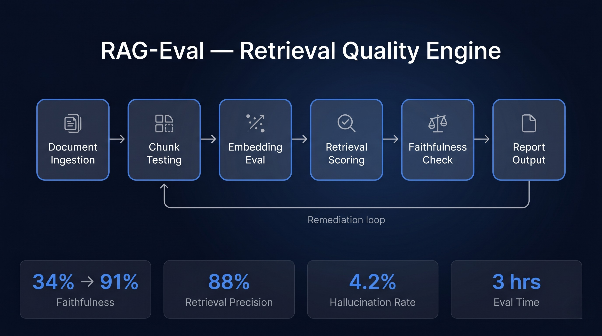
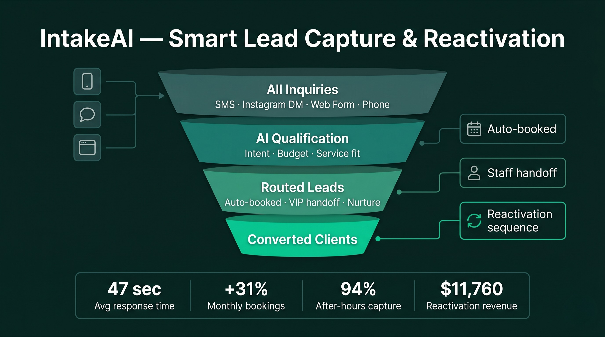

AI Agents
Intake, reporting, evaluation, and support agents with clear roles and handoffs.
DigitalStoneAI Studio
I design AI workflows, agentic systems, RAG solutions, and automation that turn messy operational work into practical business tools, from intake and reporting to AI content systems and inspection workflows.
Outcome Signals
What I Build
I focus on systems that have a clear job: capture work, route it, evaluate it, summarize it, report on it, or help a team act faster.
Intake, reporting, evaluation, and support agents with clear roles and handoffs.
Workflow triggers, routing logic, follow-ups, dashboards, and practical tool connections.
Knowledge workflows built around source quality, retrieval checks, and grounded outputs.
AI media, drone/ROV inspection support, prototypes, and operator-minded system design.
System Design Approach
I like building with intention. Before a workflow gets automated, I map how it actually runs, where people get stuck, what the AI should and should not touch, and how the finished system can be tested, secured, maintained, and improved.
Start with the operational truth, not the tool stack.
Plan what the AI does, what people review, and what gets automated.
Turn the plan into a working system with reliability in mind.
Prove the system against realistic situations before trusting it.
I prefer clear responsibilities, named steps, and readable outputs over fragile automation that only works in a demo.
I think through data exposure, permissions, secrets, unsafe inputs, and failure modes early, especially when AI touches client data or external tools.
Whether the metric is accuracy, response time, lead capture, review time, or report consistency, the build needs proof that it improved something real.
Selected Work
Four portfolio case studies show how AI systems can evaluate retrieval quality, capture and reactivate leads, deliver business intelligence, and support infrastructure inspection workflows.

Evaluation
Retrieval quality benchmarking system for accuracy, faithfulness, and hallucination control before deployment.
Result: faithfulness moved from 34% to 91% and hallucination rate dropped to 4.2%.
View case study
Lead Capture
Client intake, qualification, booking, and reactivation system for service businesses.
Result: 94% after-hours capture, 47-second response time, and +31% bookings.
View case study
Business Intelligence
Venue intelligence and owner brief system that turns event data into actionable operating decisions.
Result: +28% loyal guest retention and $9 more revenue per head.
View case study
Inspection
Computer vision and AI reporting system for drone and ROV infrastructure inspection workflows.
Result: review time dropped to 1.4 hours with 100% critical defect detection.
View case studyQuick FAQ
Short answers for the homepage. The contact page has the full FAQ if you want more detail before reaching out.
I build practical AI automation, agent workflows, RAG systems, intake tools, reporting dashboards, inspection support systems, and AI media workflows. The goal is not hype. The goal is a tool that helps a real person move faster, see clearer, or make a better decision.
Yes. I am open to company roles, contract builds, consulting work, and client projects. If the work sits at the edge of AI, operations, automation, creative production, or technical problem solving, that is the lane I like.
Yes. I can help design multi-step AI workflows, agent systems, intake logic, review processes, reporting flows, and automation that connects tools together instead of leaving everything in scattered tabs.
Absolutely. A smart project can start with the process you already have. From there, I can help clean up intake, automate repeat work, improve reporting, create AI review steps, or build a lightweight system around what is already working.
Next Step